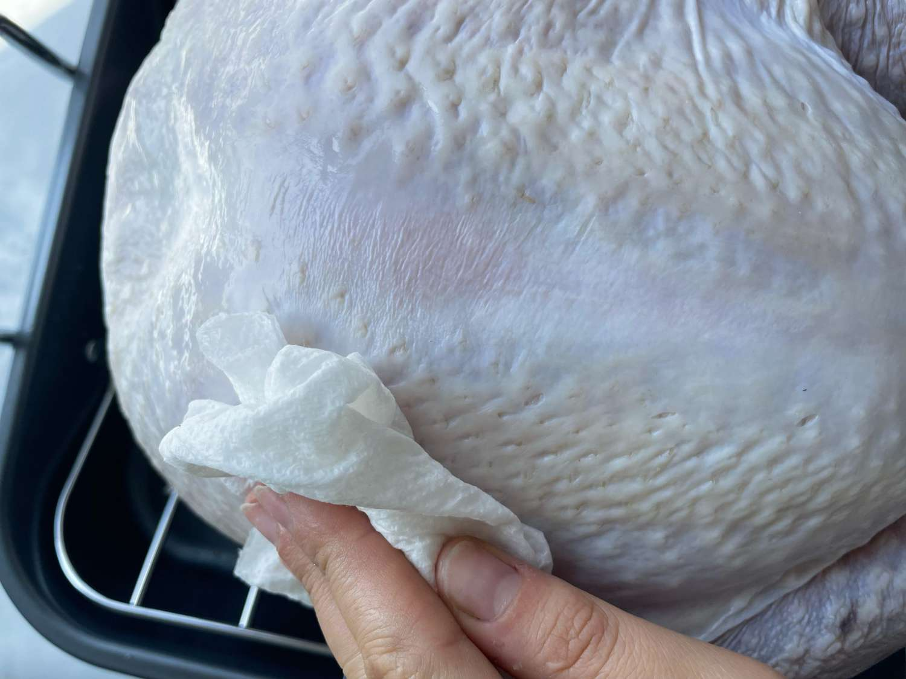
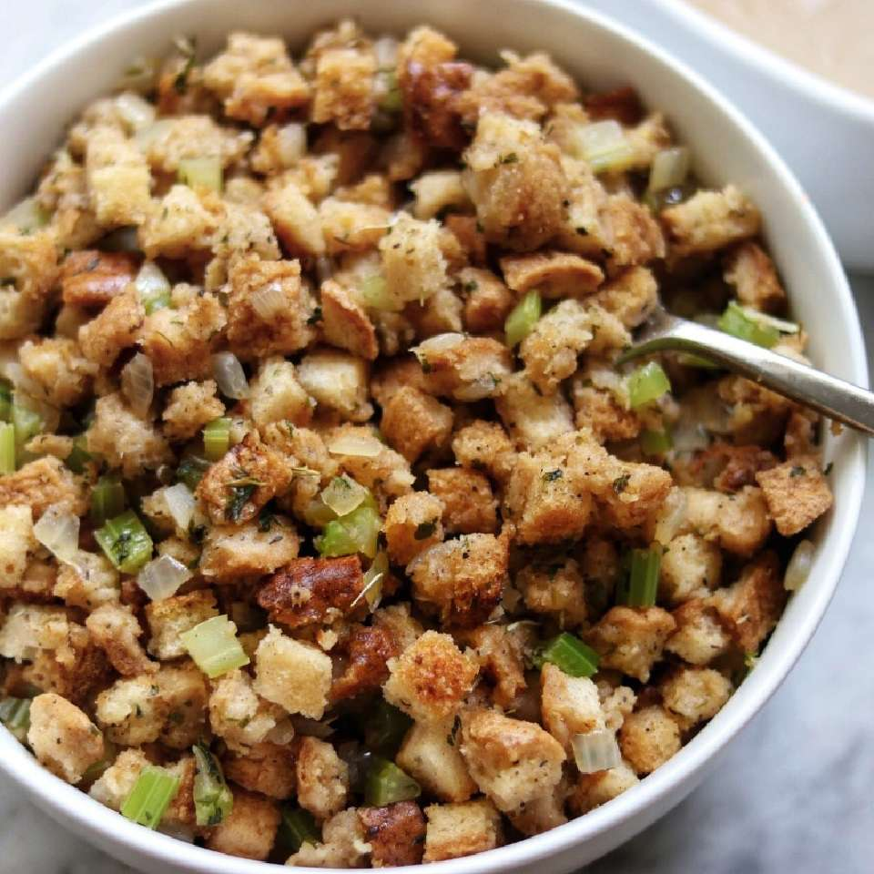
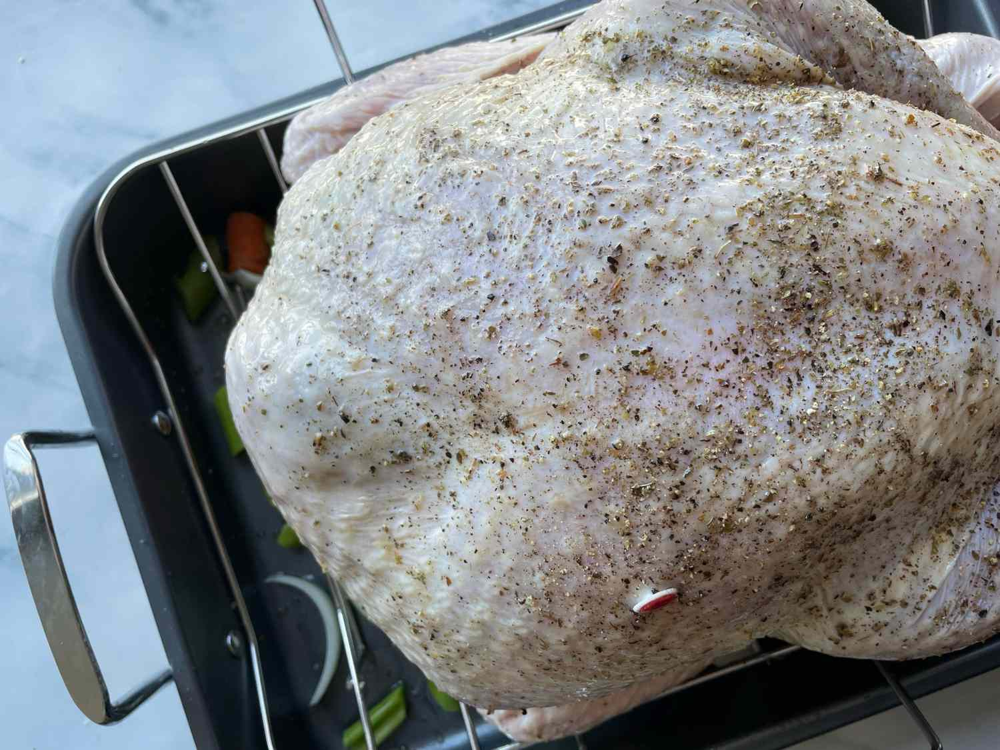
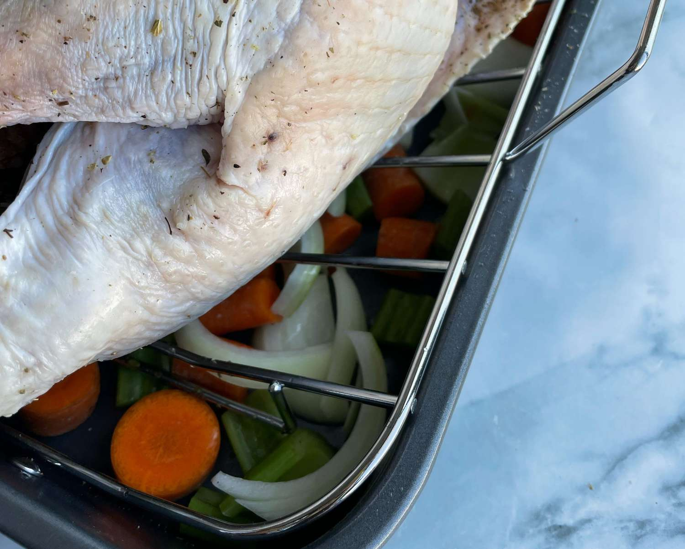
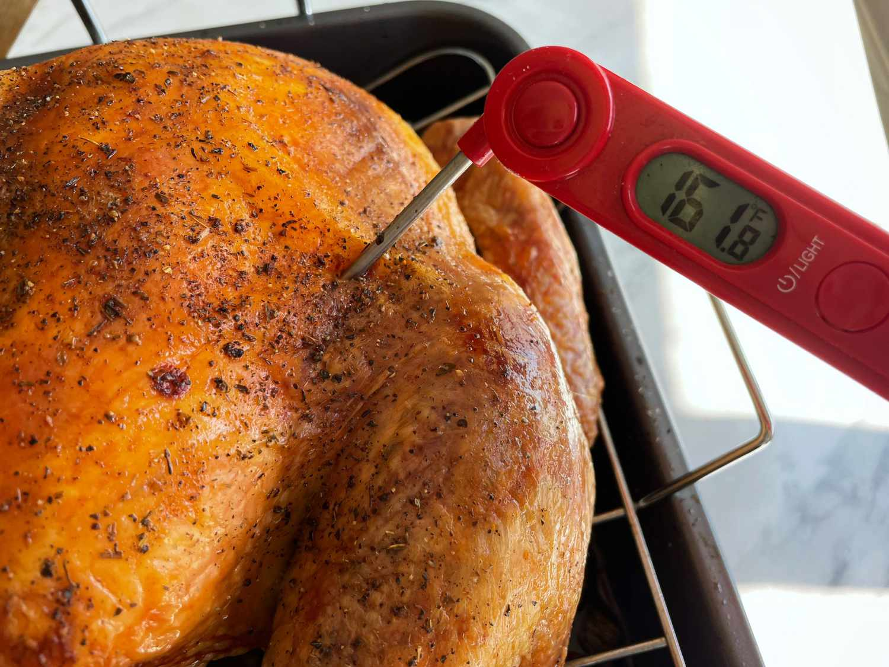
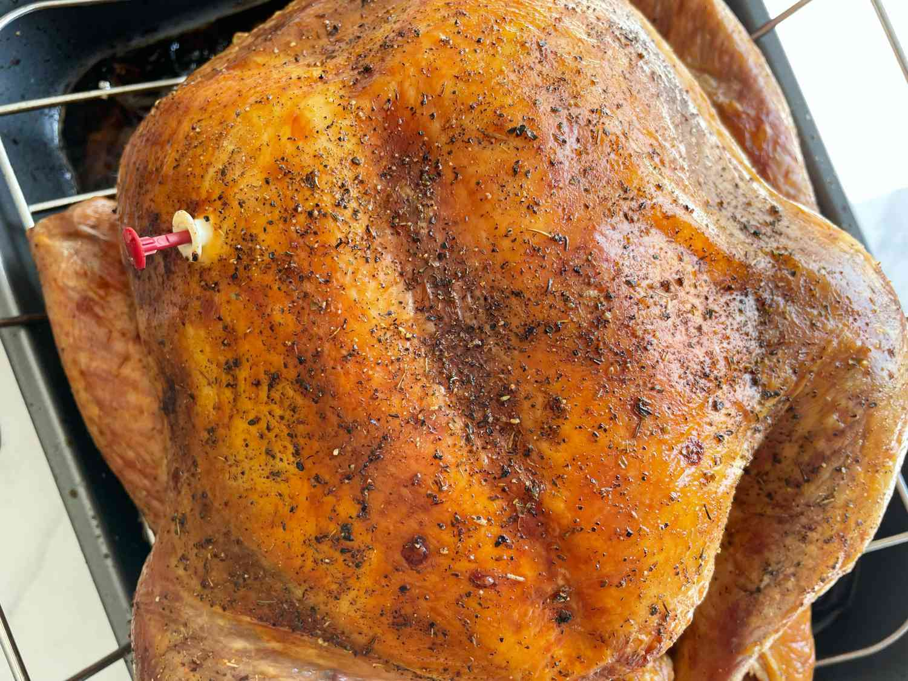
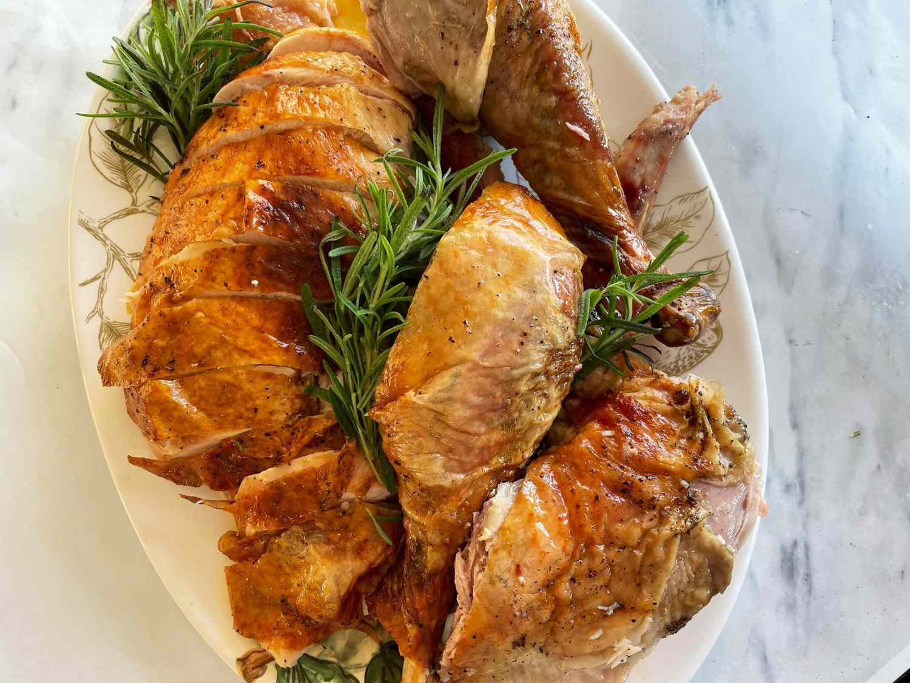

Get all the tips you need to cook a turkey, from prepping and basting to roasting and carving.
by Allrecipe Editorial Team and Vanessa Greaves|| Updated on june 29,2021
So you've decided to be in charge of the turkey this year? You've come to the right place for advice.
First of all, if you haven't already purchased your bird, be sure to read all about
Next, let's talk about how to cook that bird.You'll be glad to know that cooking a turkey is surprisingly easy. Even with just a
little bit of prep, you'll get great results you can be proud of. Here's how to
prepare a thawed turkey for roasting in the oven:
Unwrap the plastic around your turkey over the sink to ensure that any juices
will run down the drain. Remove the packet of giblets from the cavity of the bird
and save them for gravy or stuffing. Next, use paper towels to pat dry the bird
inside and out.
If you are stuffing the turkey, stuff it loosely, allowing about ½ to ¾ cup stuffing
per pound of turkey. While stuffing a turkey is traditional (and picturesque), it
has become less and less common over the years for a number of reasons. Most
importantly, cooking your stuffing to 165 degrees F likely means that you'll over-
cook the rest of the bird.
"If you don't want to miss out on stuffing, it's much easier (and safer) to " prepare
the stuffing in a separate baking dish instead of the bird's cavity.
The purpose of trussing is to ensure that the bird will cook as evenly as possible.
If the legs are not secured tightly, more air will be able to circulate around them
in the oven, which will cause them to cook more quickly. This can eventually
lead to portions of the bird becoming over-cooked, while other portions aren't
quite there.
Tie the drumsticks together with kitchen twine, and brush the skin with melted
butter or oil. If you don't have kitchen twine, you can opt to truss with
(unflavored) dental floss or even use the turkey's skin to fold the legs tightly
together. While you're trussing, make sure to tuck the wings behind the back of
the turkey. If they're exposed, they will burn quickly in the oven.
Read more: How to Truss a Turkey
Place the bird on a rack in a roasting pan, and into a preheated, 350 degree F (175 degrees C) oven (or follow your recipe's instructions). To enhance the gravy you'll likely make with the turkey's drippings, place aromatics and herbs below the roasting rack, such as carrots, onion, celery, garlic, rosemary, and sage. As the turkey cooks, drippings will coat these aromatics for a savory, flavor-packed sauce. You can add some stock and white wine to the aromatics as the turkey cooks to deglaze the roasting pan.
Read more: How Long to Cook a Turkey
Roast until the skin is a light golden color, then cover the breast loosely with a foil tent to prevent further browning. During the last 45 minutes of baking, remove the foil tent to brown the skin. Basting is not necessary, but it helps to promote even browning. As the turkey approaches the end of its cook time, check the temperature of your bird with an instant read thermometer. The breast should be 155 degrees F (it will continue to cook while it rests) and the thigh should hit 165 degrees F. If the turkey is done, transfer it to a clean sheet pan and tent with foil.
Be sure to allow at least 30 minutes between the time you take the turkey out of the oven and when you serve it. The turkey needs to "rest" for 20 to 30 minutes (you can use that resting time to warm up your Thanksgiving side dishes and make the gravy), and then you can carve your turkey. Carve away the breasts, then carefully slice them, keeping the golden brown skin intact. Next, carve away the legs, separating the thighs and drumstick at the ligament.
Serving Top: Warm your serving platter in the oven for about five minutes before you put the sliced turkey on it. You've put in too much work to serve cold turkey!